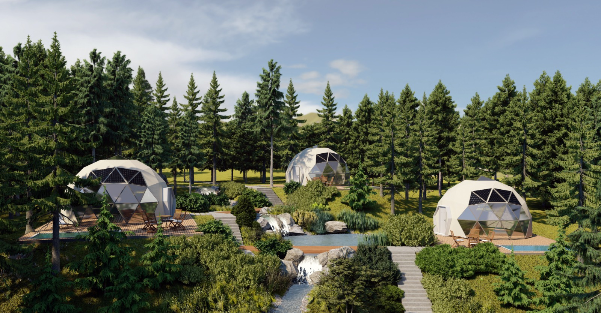

Ujedinili smo znanja, resurse i vizije domaćih proizvođača i stručnjaka iz različitih oblasti sa ciljem da kreiramo jedinstvene kupole zasnovane na principima funkcionalnosti i ekonomičnosti. Prirodnim oblikom i unutrašnjim dizajnom u nameri smo da Vam pružimo uslove maksimalnog komfora na mestu koje Vi odaberete. Naš tim je tu da vam pruži kompletnu uslugu u rekordnom roku (od želje do realizacije za 35 dana). Osim projektovanja, proizvodnje i montaže, vršimo i demontažu kao i premeštanje kompletnog objekta na drugu lokaciju u roku od 7 dana. Pored inovativnih rešenja tehničke prirode, pobrinuli smo se da ne morate da brinete o dozvolama, održavanju i osiguravanju objekta, izradi enterijera, kao i mnogim drugim standardnim poteškoćama. Takođe, naši klijenti mogu da očekuju visok kvalitet materijala, kao i brzu i efikasnu izgradnju. Uz našu izuzetnu uslugu i kvalitetne proizvode, u mogućnosti smo da Vam pružimo ne samo kvalitetan i inovativan, već i zdrav i održiv stil života.
Geodezijske kupole su inovativni i moderni oblici stambenog prostora koji nude brojne prednosti u odnosu na klasične građevine.
Odlikuju se dugotrajnošću, izdržljivošću i otpornošću na prirodne nepogode poput zemljotresa, uragana i snažnih vetrova. Zahvaljujući svojoj formi, kupole su u stanju da podnesu i velike količine snega. One su odličan spoj inovativne tehnologije, funkcionalnosti i jedinstvenog dizajna koji će u potpunosti promeniti vaš način života. Njihova jednostavnost i minimalizam ih čine prilagodljivim različitim veličinama, oblicima, stilovima i okolinama. Savršen su izbor za sve koji žele nešto potpuno drugačije, što će probuditi njihovu maštu i avanturistički duh. Estetska upečatljivost kao i njihov neobičan oblik, čini geodezijske kupole privlačnim, jedinstvenim i modernim u odnosu na druge građevine. Objekti ovakvog tipa omogućavaju maksimalnu iskorišćenost prostora, dok istovremeno stvaraju prirodnu ventilaciju i osvetljenje, uz energetsku efikasnost i ekološku prihvatljivost.